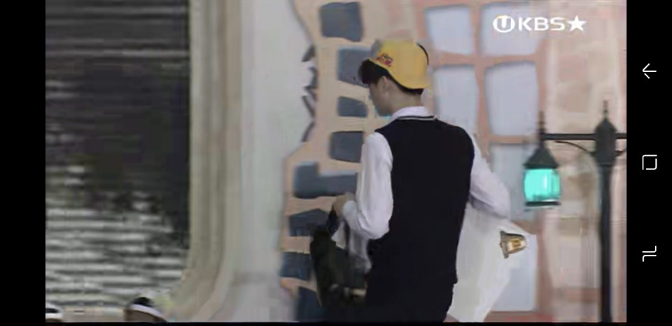

About Mele
React.js, Next.js, Typescript, MariaDB로 자사 홈페이지를 제작했습니다. FE/BE를 따로 나누지 않고 fullstack 개발을 한 뒤, 온프레미스로 배포했습니다.
전북대학교에서 진행한 창의적 문제해결 교육 프로젝트에서 Design Thinking을 활용하여 여러 사람과 문제를 정의/해결하는 과정을 배운 것을 바탕으로 아이디어 공모전에 팀으로 참가해서 2등으로 수상했습니다.
전북대학교 총동아리연합회에서 여러 중앙동아리를 관리하고, 비대면 콘서트를 기획/주최하는 등 다양한 사람들과의 소통과 규모가 큰 프로젝트의 추진을 경험했습니다.
TMI
1. 고등학생 시절 도전 골든벨에 출연해 최후의 8인까지 남았다.

2. 와썹맨 전북대편에 출연해 박준형 옆에서 디팡을 탔다.
3. MBC 9시 뉴스에 출연해 인터뷰를 했다.

4. 하스스톤 전설 등급을 달성해본 적이 있다.